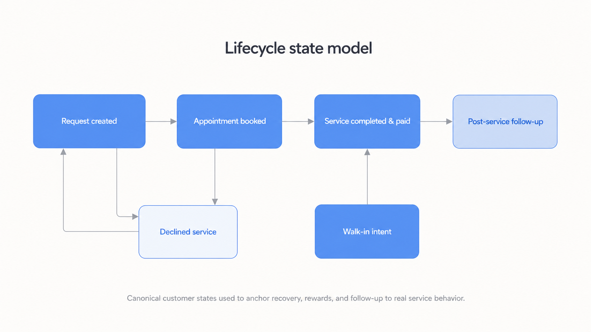

Rebuilding the booking journey
A more recoverable multi-step booking journey that recognizes returning customers and preserves their progress.
Read caseProduct Manager focused on growth, lifecycle systems, and marketplace experiences, with a strength in making complex operational products understandable and reliable.
A more recoverable multi-step booking journey that recognizes returning customers and preserves their progress.
Read caseA points-based rewards MVP with clear earn/burn rules and a cross-surface launch that worked at meaningful volume.
Read caseLifecycle infrastructure that distinguishes intent from completion and supports recovery journeys.
Read caseAn operating model that turns feedback into reliable, closed-loop action anchored to the real service moment.
Read caseA more recoverable journey that recognizes returning customers and preserves their progress.
The CarAdvise booking experience combined vehicle entry, service selection, shop choice, scheduling, payment, and confirmation in a multi-step journey. When confirmation failed late in the process, customers could get stuck, repeat completed steps, or encounter ambiguous payment behavior. Returning users were also asked to provide information the platform already knew, making both activation and repeat booking unnecessarily fragile.
I defined the customer and system behavior across first-time, returning-user, and failure states. I translated that strategy into implementation-ready requirements for state preservation, payment and confirmation, conditional steps, saved customer data, service discovery, mileage recommendations, location behavior, and responsive experiences.
I extended those principles across US and Canadian journeys, partner-specific benefits, walk-in behavior, desktop, and responsive mobile. During UAT, I consolidated copy, validation, navigation, pricing, and interaction findings into a release-hardening package.
The error-recovery, repeat-booking, and first-time-user hardening work reached production, supported by related improvements to dashboard entry, vehicle switching, service search, responsive desktop behavior, and mileage recommendations. The result was a more recoverable journey that recognized returning customers and preserved their progress. I’m intentionally withholding conversion and MAU claims until the underlying booking analytics and comparison periods are validated.
A points-based rewards product with clear value and cross-platform delivery.
The previous miles-based rewards concept was difficult to understand and weakly connected to the maintenance behaviors CarAdvise wanted to encourage. We needed a points-based MVP that created recognizable value, supported redemption, worked across customer and operational surfaces, and remained understandable to both customers and support teams.
I translated the retention goal into the program’s operating rules, customer experience, lifecycle data, measurement plan, launch readiness, and post-launch support model. I defined the audiences, earn-and-burn behavior, rounding, reservation states, exclusions, retroactive eligibility, success measures, and MVP boundaries.
I extended those principles across US and Canadian journeys, partner-specific benefits, walk-in behavior, desktop, and responsive mobile. During UAT, I consolidated copy, validation, navigation, pricing, and interaction findings into a release-hardening package.
The Rewards program launched on May 22, 2026 across web, mobile, operational tooling, and lifecycle communications. Within its first week, roughly 230 orders successfully received the 500-point launch bonus, providing early evidence that the eligibility and issuance logic was operating at meaningful volume. I also established the support and triage model used to identify redemption and ledger edge cases after launch. Retention, redemption, visit-frequency, and AOV effects remain measurement priorities rather than claimed outcomes.
Lifecycle infrastructure built around real customer behavior and intent, not ambiguous events.
This CarAdvise lifecycle initiative started with a simple observation: too many programs were reacting to ambiguous events instead of to what customers had actually done or were ready to do next. Klaviyo had become a duplicated, noisy environment, and critical distinctions—like walk-in intent versus completed service, or declined work versus true churn—weren’t reliably captured. I treated lifecycle messaging as a product-infrastructure problem, rebuilding events and states so journeys could be designed around real customer behavior and intent rather than system guesses.
I treated a declined-service customer as interested but unresolved, not disengaged. They had already acknowledged a maintenance need and received a recommendation, but something—price, timing, trust, or competing priorities—kept them from acting in that moment. That mindset changed the requirement from “send a reminder email” to “build a recoverable product state.” The system needed to remember what was declined, where it was recommended, what it originally cost, which alternatives were available, and how to reopen the booking journey with that context intact.
A walk-in request meant the customer had chosen a shop and expressed an intention to visit, but they hadn’t necessarily arrived, received service, or paid. That put them in a “preparation, not completion” state. The system needed to treat this as intent rather than a finished visit and wait for a verified post-service event before triggering service recaps, updating maintenance history, running declined-service recovery, issuing rewards, or sending feedback surveys. This led to redesigning the state model so lifecycle programs, NPS, and service-history features depended on true Paid/Completed signals instead of premature intent events.

Evidence status is mixed: declined-services data reached production, event/property consolidation is in development, and a reliable walk-in completion event remains in backlog. The work is intentionally presented as an evolving lifecycle platform rather than a single campaign, creating a safer foundation for personalized programs and measurable recovery journeys.
A documented, reliable feedback operating model with clear ownership and QA.
Replacing Delighted with Qualtrics wasn’t simply a survey-platform migration. CarAdvise needed reliable triggers, transaction context, response routing, operational dashboards, suppression rules, ownership, and closed-loop follow-up. Early testing also showed that Zendesk ticket-update time was an unreliable proxy for the actual service moment, creating a risk of mistimed surveys and misleading data.
I designed and documented the operating model connecting Zendesk, Qualtrics, XM Directory, transaction data, Slack alerts, QA dashboards, and CX follow-up. I also translated production findings into backend requirements for reliable Paid and completion timestamps so feedback could be anchored to the customer’s actual service experience.
The Zendesk-to-Qualtrics NPS integration is live, supported by a documented operating model for QA, routing, suppression, ownership, and follow-up. The initial release uses an interim timing anchor, while the true Paid/completion timestamp refinement is Ready for Dev. The work established a trustworthy foundation for feedback operations while creating a clear path toward more accurate survey timing and closed-loop customer recovery.